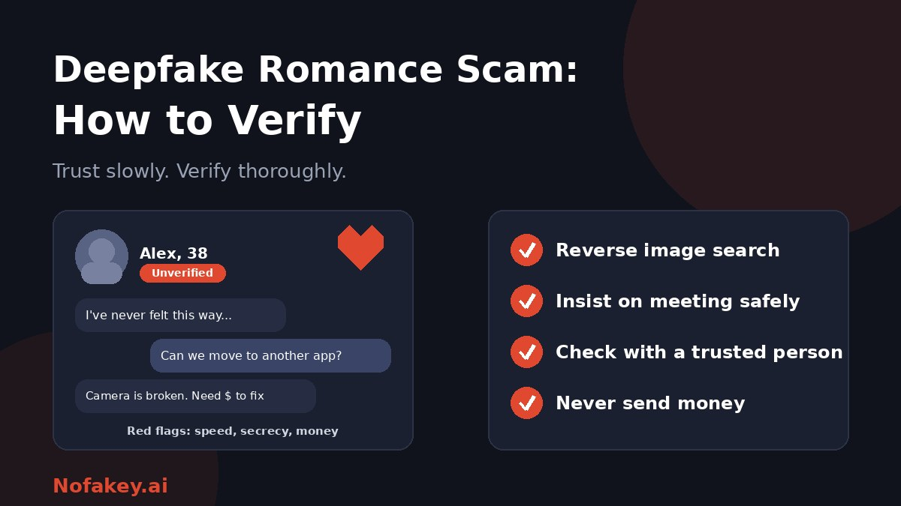

You have been talking for weeks. The messages are warm, the photos look right, and a video call finally happened. Then comes a request: help with an emergency, a flight, a "can't-miss" investment. If that sounds familiar, you are not foolish. Romance scammers are skilled and patient, and AI now helps them fake faces, voices and constant, caring conversation. This guide explains how to check who you are really talking to, and what to do if it already went wrong.
How deepfake romance scams work
Romance scams are not new. What changes is how convincing the fake person looks and sounds. Common ingredients include:
- Stolen or AI-generated photos of an attractive, trustworthy-looking person.
- Scripted or AI-assisted chat that is attentive, consistent and available at any hour.
- Altered live video, where a face or voice is changed in real time, or prerecorded clips are played to look live.
- Impersonation of well-known people, including celebrities, professionals, military personnel or "wealthy businesspeople."
- A switch to private channels, so the platform's safety tools no longer apply.
- A slow build, then a request: money for an emergency, travel, customs fees, medical costs, or an investment tip.
Behind the screen there may be an organised group working from a script. Knowing that can help you avoid blaming yourself.
Red flags in the relationship
The strongest signs are about behaviour, not about visual glitches.
| Red flag | What it looks like |
|---|---|
| Very fast intimacy | Declarations of love, "soulmate" language or future plans within days or weeks |
| Never able to meet | Always working abroad, on a ship, deployed, or "just about to travel" and then something goes wrong |
| Video problems | Camera "broken," poor connection, short calls, no spontaneous video, or refusal to do a video call at all |
| Moving off the platform | Pressure to switch to a private messaging app quickly |
| Secrecy | "Don't tell your family or friends, they won't understand" |
| An emergency and a request | Sudden crisis that needs money, gift cards, crypto or a transfer |
| An investment pitch | Tips about trading or crypto, often through a site or app they supply |
| Story inconsistencies | Details about job, location, family or age that change or do not fit |
| Too perfect | Says what you want to hear, mirrors your feelings, and is always available |
Why a video call does not prove it's real
Live face and voice tools, recorded footage and scripted calls can all make a fake look convincing. Glitch spotting, such as odd blinking or lip sync, is no longer reliable, and some real calls look strange because of a bad connection. Treat a video call as one signal. See how to verify a person on a video call is real for checks that do not depend on the picture, and what a deepfake is and how to protect yourself for the basics.
How to verify an online partner, step by step
- Reverse image search their photos. If the pictures appear under other names or on other profiles, that is a major warning. Remember that AI-generated photos may not appear anywhere else, so a clean result does not prove they are real. For how searches work, see how journalists verify images.
- Check consistency. Compare what they tell you about work, place, age and family over time. Note anything that changes.
- Search for the person's claimed identity. A claimed profession, company or location should leave a traceable record. Verify it through independent sources, not links they send.
- Ask for something unscripted. Request a short video where they do something specific and ordinary, such as holding up today's handwritten note or showing their surroundings. A real person can usually do this. A fake may stall, though a skilled scammer may not.
- Suggest a safe in-person meeting. Pick a public place, tell someone where you are going, and arrange your own transport. A real partner will understand the caution. Scammers always have a reason why they cannot come.
- Ask a trusted person to review. Show a friend, relative or a support service the conversation. Outsiders often spot red flags you cannot see from inside the relationship.
- Keep your own channels. Be cautious about moving to private apps, and never use links, apps or investment platforms they provide.
- Hold your information back. Do not share ID documents, banking details, passwords, one-time codes or intimate images with someone you have not met.
- Test with time. Slow the pace. Pressure and urgency are tools of the scam, and real relationships can wait.
Realistic example (made up)
The charming overseas professional
A person matches with you, says they work abroad and soon moves the chat to a private app. After a month they declare love and share a short video call. Then a "customs problem" blocks a parcel for you and they need help with the fee. A second request follows for an investment "they trust."
What to do: pause, run a reverse image search, show the messages to a friend, refuse to send money, and report the profile.
Watch for the investment turn
- Be very cautious if a romantic contact starts talking about trading, crypto or "guaranteed" returns.
- Never use trading sites or apps they point you to. Check any business with the relevant financial regulator in your country and find its website yourself.
- Early small "profits" can be shown to lure larger deposits. Withdrawals then become impossible.
If someone threatens you with images
Some scammers collect images or video and then demand money, threatening to share them or to share fake versions made with AI. If this happens:
- Do not pay. Payment rarely stops the threats and often leads to more demands.
- Stop contact, keep evidence, and do not delete messages yet.
- Report the account to the platform and to the police or your national cybercrime service.
- Tell someone you trust, and use a support service if you feel distressed. You are the victim of a crime.
- If the person involved is under 18, a trusted adult and the authorities should be involved straight away.
If you have already sent money or information
- Stop all contact and payments. Do not send "one last" fee to unlock your money.
- Save evidence: messages, photos, usernames, payment records and any websites or apps used.
- Contact your bank or payment provider immediately. The sooner you act, the better the chance of stopping or tracing a payment.
- Secure your accounts. Change passwords, enable two-step sign-in, and check email forwarding and recovery details.
- Report it to your local police, your national fraud reporting service or consumer protection authority, and the platform where you met.
- Beware of recovery scams. Anyone who contacts you offering to get your money back for a fee is very likely another scammer.
- Look after yourself. Shame is common and unwarranted. Talk to someone you trust or a victim support service.
Not sure whether a message, profile link or offer is genuine? Paste it into our free checker for a quick first read.
If you think a loved one is being scammed
- Stay calm and kind. Blame and ridicule can push people closer to the scammer.
- Ask open questions about the relationship, and share the red flags without accusing.
- Suggest simple checks together, such as a reverse image search.
- Help them contact their bank if money is involved, and stay in touch afterwards.
- Agree a family safe word for urgent requests, as described in our deepfake guide.
What about deepfake detectors?
Some security tools claim to flag manipulated video. Treat them as one more layer of scrutiny, not as proof. They can miss good fakes and flag real footage, so no result should replace the checks above. Read are AI detectors accurate? for the reasons.
Conclusion
Deepfake romance scams work because they borrow your trust and hurry your decisions. You do not need to out-detect the technology. Slow down, verify with several checks, keep money and documents out of an unverified relationship, involve someone you trust, and report quickly if something goes wrong. If you are ever unsure about a message, profile or offer, try our free checker for a first read, and find more guides on the Nofakey.ai blog.
Frequently asked questions
What is a deepfake romance scam?
It is a scam in which someone builds a fake romantic relationship online, using stolen photos, AI-generated images, cloned voices or altered video calls, to win trust and then ask for money or personal information.
How can I verify someone I met online is real?
Run a reverse image search on their photos, check that their story is consistent, insist on a safe in-person meeting in a public place, use several verification checks rather than one video call, and ask a trusted friend to review the relationship.
Can a video call prove someone is real?
No. Live face-swap tools and pre-recorded footage can fool a video call. Treat it as one signal and never send money because a call looked convincing.
What should I do if I sent money to an online romantic partner?
Stop contact, keep all evidence, contact your bank or payment provider immediately, change passwords, and report to the police and your national fraud reporting service. Be wary of anyone offering to recover your money for a fee.
Is it my fault if I was scammed?
No. These scams are run by organised, skilled manipulators who exploit trust. Reporting and getting support are the right next steps.
Got a suspicious message, profile link or offer to check?
Run it through the checker